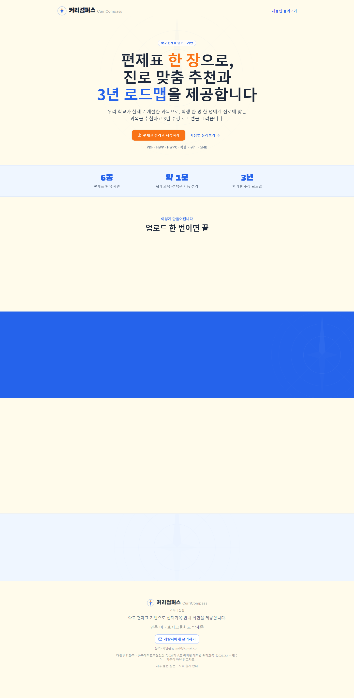
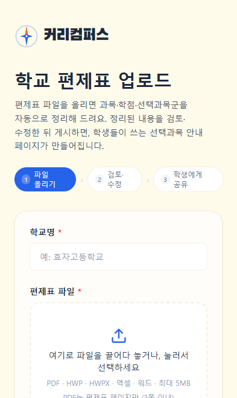
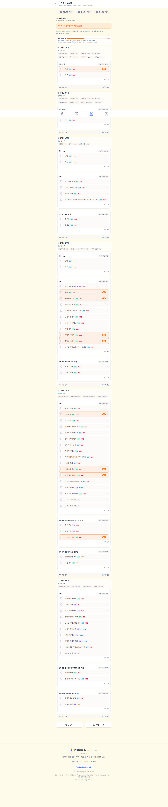
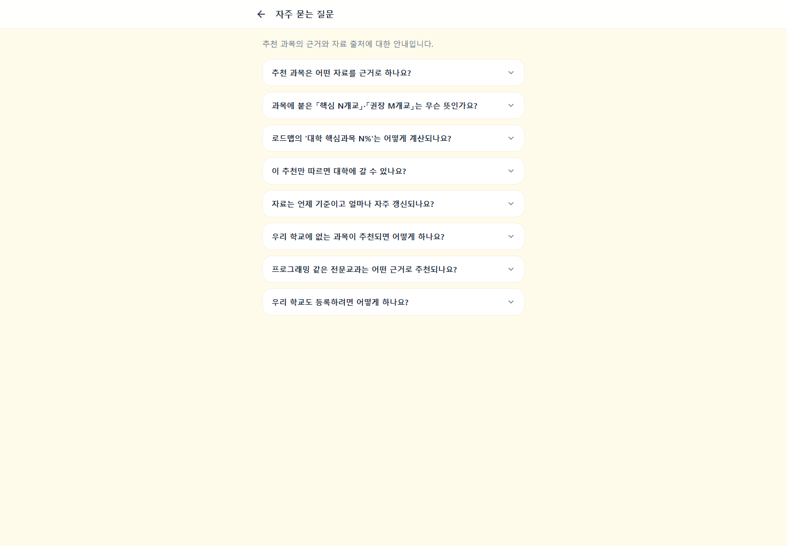
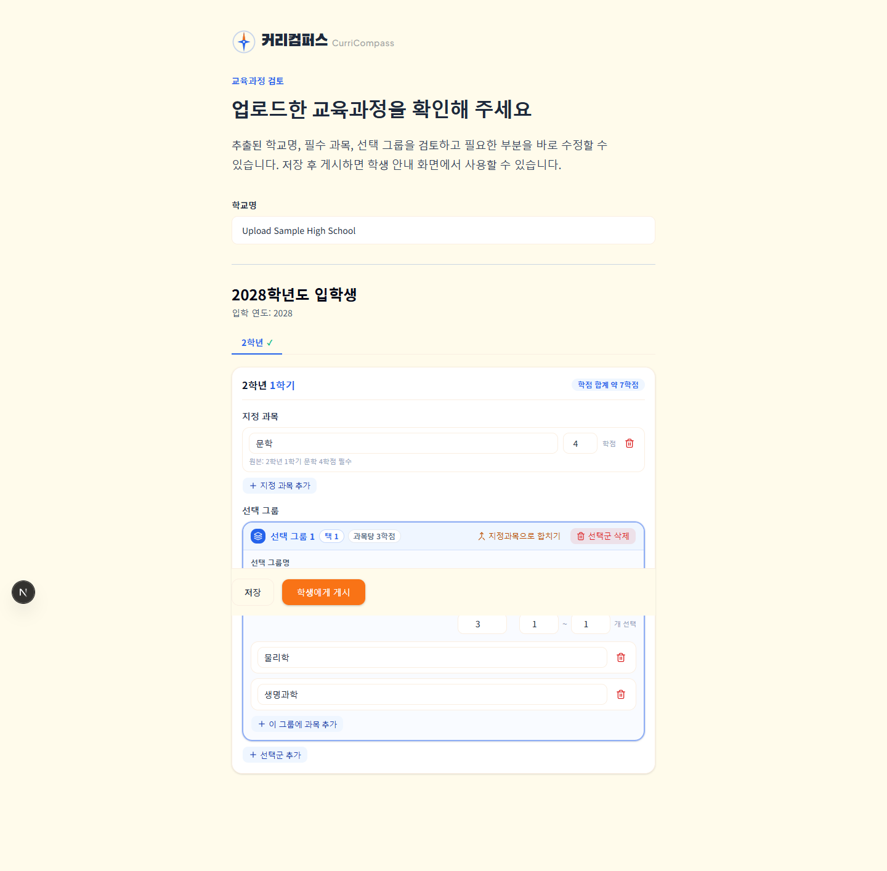
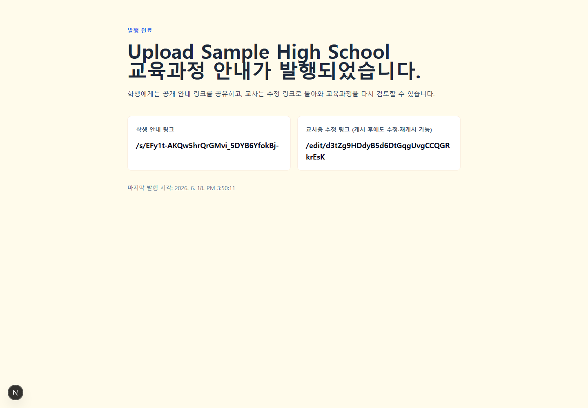

EXECUTIVE SUMMARY
제품 흐름은 완성됐지만, 데이터 신뢰성 게이트가 확장 배포를 막는다
커리컴퍼스는 편제표 업로드부터 학생용 공유 페이지, 진로 추천, 3년 로드맵까지 하나의 실제 사용 흐름으로 연결되어 있다. 모바일 학생 화면은 목적과 다음 행동이 분명하고, 추천 근거와 학교 개설 여부도 결과 가까이에 배치되어 있다.
그러나 운영 중인 학교 데이터에서 여러 과목명이 하나로 붙은 값이 학생 로드맵까지 게시된 사실을 확인했다. 현재 시스템은 이런 항목을 교사에게 경고하지만, 경고를 해결하지 않아도 게시할 수 있다. 추천·로드맵 서비스에서는 화면 완성도보다 과목명과 선택군의 정확성이 우선이므로, 이 문제를 해결하기 전까지는 전국 단위 확장보다 제한적 베타 운영이 적절하다.
영역별 현재 평가
| 영역 | 평가 | 판단 근거 |
|---|---|---|
| 핵심 제품 흐름 | A- | 업로드 → 검토 → 게시 → 추천 → 로드맵이 실제로 연결됨 |
| 학생 모바일 UX | B+ | 학교 맥락, 관심분야, 추천 근거, 개설 여부가 명료함 |
| 교사 검토 UX | B- | 편집 기능은 충분하나 긴 폼, 원문 대조 부재, 경고 비차단 |
| 데이터 신뢰성 | D | 붙은 과목명이 운영 로드맵에 실제 게시됨 |
| 접근성 | B | 기본 구조 양호, 일부 대비 2.33~2.66 및 무명 아이콘 링크 |
| 성능 | C+ | 모바일 성능 72, LCP 4.1초, TBT 400ms, 과목 목록 52,648px |
| 유지보수성 | C | 주요 페이지·폼·LLM 모듈이 400~850줄 단일 파일 |
| 운영·보안 | C | 토큰은 강하지만 만료·회수·삭제·보존정책·요청 제한이 없음 |
서비스 구조
파서, 구조화 모델, 저장소, 학교 데이터 어댑터가 분리되어 공급자 교체가 가능하다. 게시본을 초안과 별도 스냅샷으로 보관해 수정 중인 데이터가 공개 화면에 즉시 섞이지 않는 점도 좋다.
PDF는 일반 문서와 같은 텍스트 파이프라인만 거치지 않는다. 최대 3쪽 제한을 확인한 뒤 Render의 Kordoc 워커가 텍스트와 표를 추출하고, 구조화 단계에서 그 추출 결과와 원본 PDF의 base64 데이터를 Gemini에 함께 전달한다. Gemini는 PDF의 셀 경계·셀 내부 줄바꿈·병합 셀을 구조 판단의 1차 근거로, Kordoc 결과를 과목명과 숫자의 문자 정확도 근거로 사용한다.
Kordoc 텍스트·표 + 원본 PDF inlineData → Gemini 멀티모달 구조화
HWP·HWPX·엑셀·워드
Kordoc 텍스트·표 → Gemini 텍스트 기반 구조화
현재 공급자 설정은 gemini, 코드 기본 모델은 gemini-3.5-flash이며 Gemini 호출 제한은 90초다.
업로드 API 바깥 재시도 루프가 구조화 요청을 최대 3회 수행한다. 코드에는 OpenAI 공급자도 남아 있어 환경변수로 교체할 수
있으나, Gemini 실패 시 OpenAI를 호출하는 자동 폴백은 없다. README의 OpenAI 설정 예시와 현재 실행 설정이 달라 운영 문서
동기화가 필요하다.
OpenAI 구조화 흐름은 2026-05-29 도입됐고, 2026-06-23 PDF 표 병합 해석 정확도를 이유로 프로덕션 공급자가 Gemini로 전환됐다. 현재 Vercel 프로덕션에는 OpenAI와 Gemini 키가 모두 있지만
CURRICULUM_STRUCTURER_PROVIDER=gemini이므로
OpenAI 키와 gpt-5.5 모델 설정은 실행 경로에서 사용되지 않는다. 프로덕션 DB의 초안 128건 중 전환 커밋 이전 생성은
16건, 이후 생성은 112건이다. 다만 초안 레코드에 실제 공급자·모델·입력 모드를 저장하지 않아 과거 16건이 모두 OpenAI 호출이었다고
사후 입증할 수는 없다. 업로드 작업 또는 초안에 provider, model, inputMode, 요청 ID, 처리시간과
재시도 횟수를 기록해야 비용·품질·장애를 정확히 대조할 수 있다.
핵심 사용자 여정
교사 여정
/create에서 학교명과 편제표 파일 입력- 파서 준비·문서 분석·AI 구조화 진행 상태 확인
/review/[draftId]에서 과목·학점·선택군 수정/published/[draftId]에서 학생 링크와 수정 링크 확보/edit/[editToken]으로 재검토·재게시
주요 마찰: 원문 대조가 없고, 오류 경고를 해결하지 않아도 게시 가능하다.
학생 여정
- 학교 공유 링크
/s/[shareToken]진입 - 관심 분야 또는 희망 학과 선택
- 추천 근거·개설 여부·미개설 과목 확인
- 학기별 로드맵에서 선택군 과목 결정
- 이미지 저장 또는 링크 공유, 과목 상세 탐색
주요 마찰: 긴 로드맵과 전체 과목 목록, 게시 데이터 오류가 선택 결과에 직접 노출된다.
전체 웹페이지 분석
/
랜딩
잘된 점: “학교 실제 개설 과목으로 추천”이라는 차별점과 교사용 CTA가 첫 화면에서 분명하다. 지원 형식·처리시간·로드맵 범위도 빠르게 파악된다.
- 개선: 화면 밖 섹션을
opacity:0으로 바꾸는 Reveal 때문에 전체 캡처·인쇄·일부 비순차 렌더에서 주요 콘텐츠가 빈 구간으로 남는다. 기본은 보이게 두고 교차 관찰 시 변환만 적용해야 한다. - 개선: “약 1분”은 콜드스타트·대용량 파일에서 달라질 수 있으므로 범위 또는 최근 처리시간을 함께 표시한다.
- 개선: 영문 워드마크와 푸터의 흐린 텍스트 대비를 WCAG AA 이상으로 올린다.
/guide
사용법
잘된 점: 교사·학생 모드를 나누고 10단계 실습형 튜토리얼로 진입 장벽을 낮춘다.
- 핫스폿·화살표 등 텍스트 없는 버튼에 명확한 접근 가능한 이름을 부여한다.
- 현재 단계가 전체 흐름에서 어떤 의미인지 “업로드 1/3”처럼 업무 단계와 연결한다.
- 가이드 완료 후 CTA를 현재 사용자 역할에 맞게 분기한다.
/faq
근거·출처
잘된 점: 대학 권장과목, 전문교과, 커버리지의 한계를 설명해 과도한 확정성을 피한다.
- 뒤로가기 아이콘 링크에
aria-label="홈으로"을 추가한다. - FAQ 답변에 원문 자료명·발행일·외부 링크·서비스 반영일을 구조화해 신뢰도를 높인다.
- 데스크톱에서 480px 안팎의 좁은 열만 사용해 여백이 과다하다. 목차 또는 출처 패널을 병렬 배치한다.
/create
편제표 업로드
잘된 점: 학교명, 파일, 고급 설정이 단계적으로 노출되고 드래그앤드롭·형식·용량 안내가 명확하다. 파서 워밍 호출과 진행 단계 표시도 실제 대기 경험을 보완한다.
- 개선: 업로드 파일이 파서와 외부 AI로 전송되고 추출 텍스트가 저장된다는 처리·보존 안내가 없다.
- 개선: 최대 300초 요청에서 취소·재개·작업 복구가 없다. 비동기 작업 ID를 먼저 발급하고 상태 폴링으로 전환한다.
- 개선: IP·학교별 요청 제한과 중복 업로드 방지가 없어 비용·남용에 취약하다.
/review/*
검토·수정
잘된 점: 과목명·학점·선택 수·선택군 이동·집중이수 교정까지 실무 편집 기능이 충분하다. 의심 과목을 노란 경고로 표시하고 원본 문자열도 보여준다.
- P0: “붙어있는지 확인”, “미확인 과목”, 저신뢰 항목을 미해결 상태로 게시할 수 있다. 치명·주의를 나누고 치명 오류는 게시를 차단한다.
- 학년·학기별 문제 목록과 “다음 오류로 이동”을 제공해 긴 폼을 스캔하지 않게 한다.
- 원본 표·추출 텍스트를 옆 패널에서 같은 행과 대조할 수 있게 한다.
- 하단 고정 저장 바가 폼 내용을 가리지 않도록 충분한 하단 여백과 접힌 요약 형태를 적용한다.
/published/*
발행 완료
잘된 점: 학생용 공개 링크와 교사용 수정 링크를 명확히 분리한다.
- 링크 카드 전체 클릭 대신 “복사”, “QR”, “새 탭 열기”를 각각 제공한다.
- 수정 링크는 편집 권한을 가진 비밀 키임을 경고하고, 화면에서 기본 마스킹한다.
- 공개 중지, 링크 재발급, 게시본 버전·변경 이력, 삭제 기능이 필요하다.
/s/*
학생 홈
잘된 점: 학교명, 학교 편제표 기반이라는 신뢰 단서, 학과 검색과 관심 분야 선택이 모바일에서 매우 명료하다.
- 데스크톱에서는 본문은 512px인데 하단 메뉴는 화면 전체를 가로질러 앱 프레임이 어색하다. 데스크톱 전용 상단/측면 내비게이션을 둔다.
- 비활성 CTA 가까이에 “관심 분야나 학과를 1개 골라줘”가 있지만, 키보드·스크린리더에도 선택 상태가 전달되도록
aria-pressed를 사용한다.
/recommend
추천 결과
잘된 점: 학과 설명, 권장 역량, 학교 개설 추천, 대학 핵심·권장 배지, 미개설 과목을 한 흐름에서 제공한다.
- 조건 없는 빈 상태에
h1이 없다. “추천을 시작하려면”을 페이지 제목으로 제공한다. - 아이콘만 있는 뒤로가기 링크에 접근 가능한 이름을 추가한다.
- 긴 과목 설명을 기본 2~3줄로 요약하고, 비교가 필요한 핵심 정보(학기·개설·대학 근거)를 먼저 정렬한다.
/roadmap
3년 계획
잘된 점: 학점 합계, 선택군 제약, 추천 표시, 커버리지, 링크·이미지 공유까지 상담용 기능이 풍부하다.
- P0: 붙은 과목명이 선택지로 그대로 노출되어 잘못된 로드맵을 만들 수 있다.
- 6개 학기 전체가 한 페이지에 이어져 길이가 6,800px 이상이다. 학기 탭 또는 “미완료 학기만” 모드가 필요하다.
- 공유 URL에 상태를 넣는 방식은 편리하지만 URL이 길다. 서버 저장형 짧은 링크와 로컬 전용 모드를 구분한다.
/subjects
과목 목록
잘된 점: 검색, 학교 개설, 수능, 공통, 선택 유형, 교과 영역 필터가 충분하다.
- 운영 데이터에서 페이지 높이가 52,648px였고 전체 캡처가 5초 제한을 넘겼다. “우리 학교 개설”을 기본값으로 하고 페이지네이션 또는 가상 목록을 적용한다.
- 검색 입력은 placeholder 외에 지속적으로 보이는 label과
aria-label을 제공한다. - 현재 결과 수, 적용 필터 요약, 필터 초기화를 한 줄에 제공한다.
/subjects/[id]
과목 상세
잘된 점: 과목 성격, 평가, 관련 진로, 학교 개설 학기를 상세하게 제공하고 이전 화면 복귀 경로를 유지한다.
- 현재
h1은 “과목 상세”, 과목명은h2다. 과목명을h1로 올려 문서 의미와 검색 공유를 개선한다. - 뒤로가기 링크에 접근 가능한 이름을 추가하고, 직접 진입 시 “과목 목록”으로 복귀한다는 텍스트를 보여준다.
/exhibition
전시관
현재 상태: 소스와 70여 개 포스터 자산은 남아 있지만 페이지 시작에서 notFound()를 호출해 운영에서는 의도적으로 404다.
- 단기에는 라우트·자산을 제거해 제품 표면과 유지비를 줄인다.
- 재도입한다면 학교별 포스터 업로드·저작권·브랜딩 정책을 먼저 정의하고 과목 탐색과 명확히 다른 목적을 부여한다.
화면 증거
운영 화면은 2026-07-13 실서비스, 교사 검토·게시 화면은 같은 배포 코드와 기존 E2E 데이터로 로컬 재현했다. 이미지를 누르면 원본을 연다.
{kind=link}

{kind=link}

{kind=link}
{kind=link}
{kind=link}

{kind=link}

{kind=link}

{kind=link}

가장 중요한 문제: 스키마 검증과 의미 검증의 간극
미디어 영어세계사,
세계시민과 지리정치물리학화학생명과학지구과학,
세포와 물질대사지구시스템과학,
심화 중국어프로그래밍
모두 여러 과목이 하나로 붙은 것으로 보이며, 학생이 단일 과목처럼 선택할 수 있다.
왜 현재 게이트를 통과하는가
- 파서와 LLM이 표 셀을 하나의 문자열로 반환한다.
- 마스터리스트 기반 greedy 분리는 전체 문자열을 알려진 과목만으로 완전히 소비할 수 있을 때만 동작한다.
- 한 구간이라도 미확인 과목이면 안전을 위해 전체 분리를 포기한다.
- 긴 한글 문자열은 검토 경고로 표시되지만, Zod 스키마에는 “문자열이 비어 있지 않다”는 조건만 만족한다.
- 게시 API는 스키마 유효성만 확인하므로 경고가 남아도 게시한다.
권장 품질 게이트
| 단계 | 현재 | 개선 |
|---|---|---|
| 자동 분리 | 완전 일치만 허용 | 동적계획법 기반 후보 분리 + 미확인 잔여 구간 표시 + 원본 셀 위치 보존 |
| 위험 등급 | 모두 경고 | 붙은 과목·선택 수 불일치·학점 이상은 치명, 카탈로그 외 과목은 주의 |
| 교사 검토 | 긴 폼 안에서 개별 확인 | 상단 문제 큐, 원문 대조, 다음 오류 이동, 명시적 확인 체크 |
| 게시 API | 구조 스키마만 검증 | 치명 오류 0건 또는 관리자 강제 승인 토큰이 있어야 게시 |
| 게시 후 감시 | 없음 | 정기 이상값 스캔, 학교별 알림, 수정 후 재게시 이력 |
코드·운영 구조 개선
유지보수 위험이 집중된 파일
| 파일 | 줄 수 | 문제 | 분리 방향 |
|---|---|---|---|
recommend/page.tsx | 850 | 쿼리 해석, 추천 계산, 상태, 렌더 혼합 | recommend-domain, query parser, result sections, empty state |
roadmap/page.tsx | 791 | 선택 상태, 학점, 공유, 캡처, UI 혼합 | selection reducer, credit policy, serialization, semester view |
CurriculumReviewForm.tsx | 620 | 편집 명령, 검증, API, 전체 렌더 혼합 | review model, issue queue, save/publish service, cohort panels |
create/page.tsx | 514 | 파일 검증, 폼, 진행률 시뮬레이션 혼합 | upload form, file policy, job progress, error recovery |
openai-structurer.ts | 409 | 스키마, 프롬프트, 응답 파싱, API 호출 혼합 | schema, prompt builder, client, semantic parser |
school-adapter.ts | 318 | 변환·조회·호환 로직 집중 | published adapter, availability index, cohort queries |
운영 신뢰성
- 업로드 요청을 비동기 Job으로 전환해 Vercel 300초 의존 제거
- Render 워커 상태·파싱시간·Gemini 비전 사용 여부·LLM 재시도·실패 원인을 구조화 로그로 수집
- 초안별 공급자·모델·입력 모드·외부 요청 ID를 저장해 API 사용량과 결과 품질을 연결
- 학교·형식·페이지 수별 파싱 성공률 대시보드 구축
- 골든 편제표 회귀 세트에 실제 이상 문자열을 추가
보안·데이터 거버넌스
- 수정 토큰 해시 저장, 만료·회전·회수 기능
- 업로드 전 외부 처리·보존기간·삭제 방법 안내
- 초안·원문 추출 텍스트 자동 만료 및 학교별 삭제 UI
- 업로드 API 속도 제한, 파일 해시 중복 방지, 보안 이벤트 로그
접근성·성능 분석
접근성
현재: Lighthouse 95점. 한국어 문서 언어, 기본 키보드 요소, 축소 모션 대응은 잘 되어 있다.
- 영문 워드마크 대비 2.33:1, 푸터 12px 텍스트 대비 2.66:1로 4.5:1 미달
- FAQ·추천·과목 상세의 아이콘 전용 뒤로가기 링크에 이름 없음
- 추천 빈 상태에
h1없음 - 필터 토글에
aria-pressed, 검색 입력에 label 보강 필요
성능
랜딩 모바일: 성능 72, FCP 2.8초, LCP 4.1초, TBT 400ms, CLS 0.
- 외부 Pretendard CSS와 세 가지 Google 폰트 사용을 줄이고 서브셋·자체 호스팅
- 랜딩 클라이언트 Reveal을 CSS 기반 향상으로 단순화
- 과목 목록은 기본 범위 축소 + 페이지네이션/가상화
- 비노출 전시관의 대형 이미지 자산과 dead route 정리
개선 우선순위
의미 오류가 남은 교육과정 게시 차단
서버 게시 게이트, 문제 큐, 원문 대조, 명시적 승인과 기존 게시 데이터 전수 스캔을 한 묶음으로 구현한다.
운영 중인 붙은 과목 데이터 수정·재게시
의정부여고를 포함한 게시본에서 긴 한글 연속 문자열, 카탈로그 외 복합 문자열, 비정상 선택군을 찾아 학교 담당자 검토 후 재게시한다.
검토 화면을 오류 해결 중심으로 재구성
학년 탭이 아니라 문제 수·심각도·원문 위치를 중심으로 탐색하고, 저장과 게시 상태를 분리한다.
비동기 업로드 작업과 운영 관측성
Job 큐/상태 API, 재시도 가능한 단계, 처리시간·실패원인·학교별 성공률을 도입한다.
토큰·보존·삭제 정책 정비
수정 링크 회수·재발급·만료, 데이터 자동 삭제, 업로드 고지, 요청 제한을 제공한다.
학생 정보 구조와 데스크톱 적응
로드맵 학기 탭, 과목 목록 가상화, 데스크톱 앱 셸, 공유·복사·QR 동작을 다듬는다.
접근성·렌더링 품질 마감
대비, 아이콘 이름, 제목 구조, Reveal 기본 노출, 폰트와 LCP를 WCAG·Core Web Vitals 목표에 맞춘다.
12주 실행 로드맵
신뢰성 봉합
교사 UX
구조 개선
확장 준비
P0 완료 전에는 신규 학교를 적극 모집하지 않는다. P0 완료 후 3~5개 학교 파일 형식을 추가 검증하고, 의미 오류율과 게시 성공률을 기준으로 점진 확대한다.
성공 지표
부록: 검증 범위와 근거
| 표면 | 검증 방식 | 결과 |
|---|---|---|
| 랜딩, 가이드, FAQ, 업로드 | 운영 주소 · Chrome · 데스크톱/모바일 | 정상 응답 |
| 학생 홈, 추천, 로드맵, 과목, 상세 | 운영 공유 링크 · 실제 학교 데이터 | 정상 응답, 데이터 이상 확인 |
| 전시관 | 운영 공유 링크 + 소스 확인 | 의도적 404, dead implementation 보존 |
| 검토, 게시, 수정 | 동일 소스 · 기존 E2E JSON DB · Chrome | 재현 성공, 운영 DB 변경 없음 |
| 테스트 | pnpm run test | 19개 파일, 88개 테스트 통과 |
| 정적 검사 | pnpm run lint | 오류 0, 경고 2 |
| 타입·빌드 | pnpm run typecheck, pnpm run build | 모두 통과 |
| 성능·접근성 | Lighthouse 모바일 | 성능 72, 접근성 95, Best Practices 100, SEO 100 |
분석한 주요 소스
src/app/api/curricula/upload/route.ts, parser·LLM providers, 후처리·검토 플래그·게시 API- 교사 화면:
/create,/review,/published, curriculum editor components - 학생 화면: share layout, home, recommend, roadmap, subjects, subject detail, bottom navigation
- 운영·데이터: Prisma schema, README, HANDOFF, E2E 구성과 19개 단위 테스트 파일